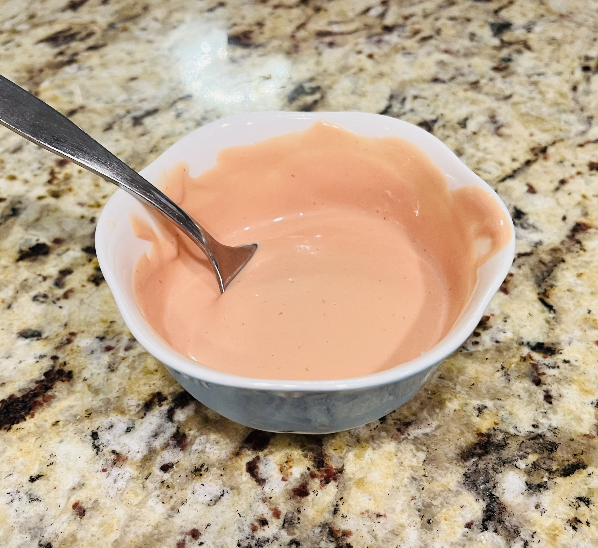
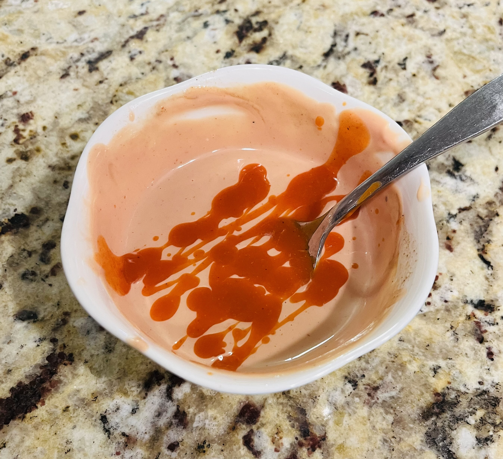
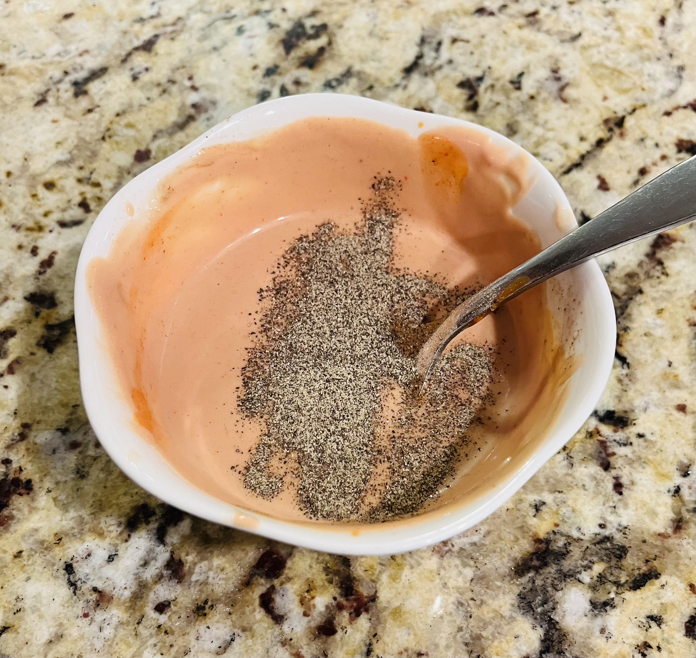
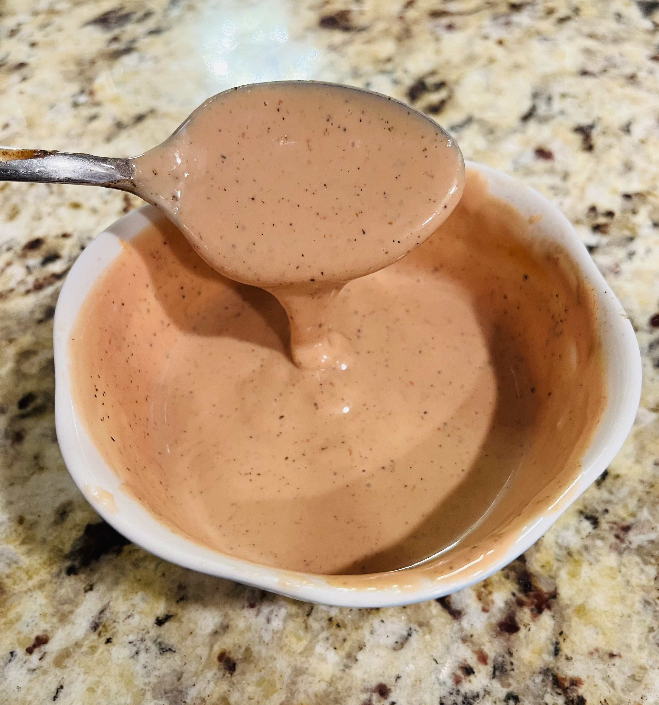

In a bowl, mix together mayonnaise, ketchup, ranch, Worcestershire sauce, and pepper. If you like it spicy, add the hot sauce. Adjust ingredients according to your preference.
This sauce is perfect for burgers, sandwiches, or as a dip for your favorite snacks!
   